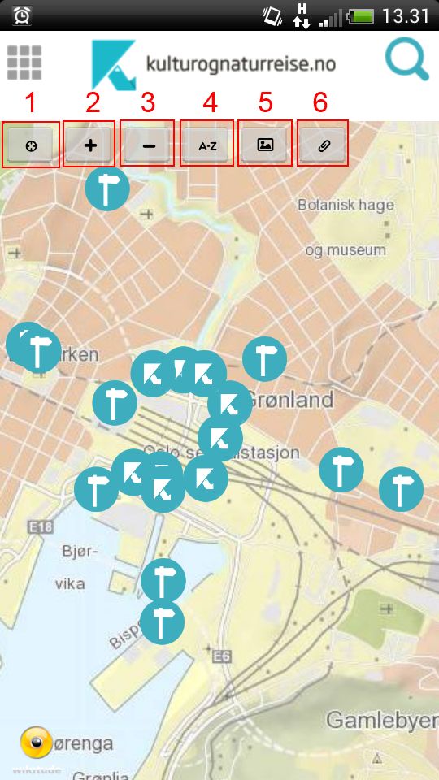
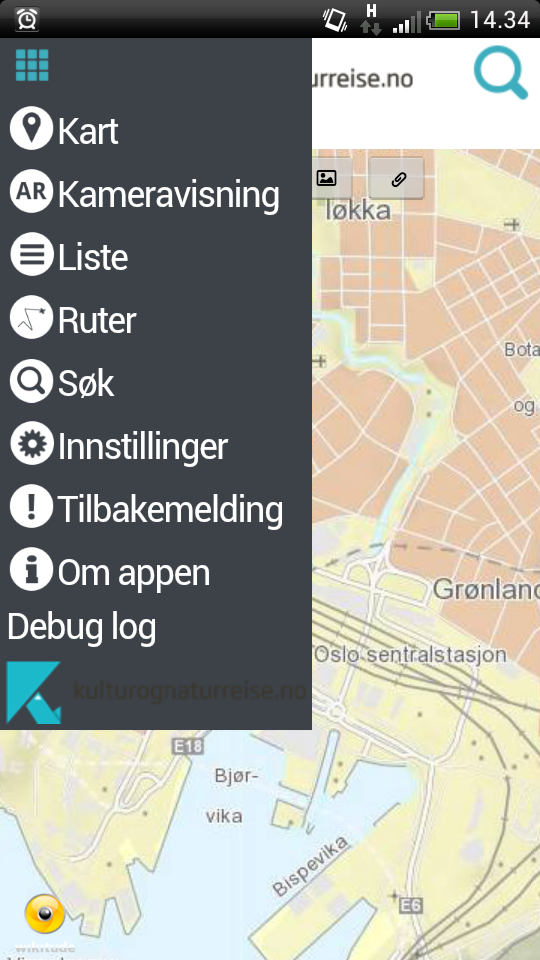
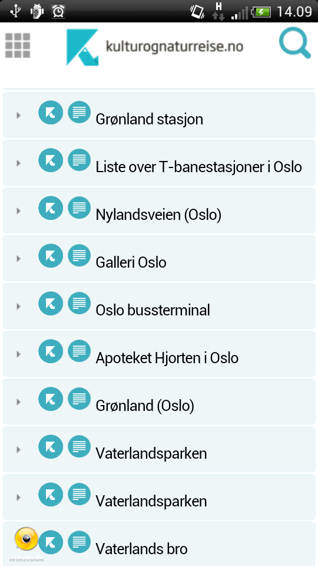
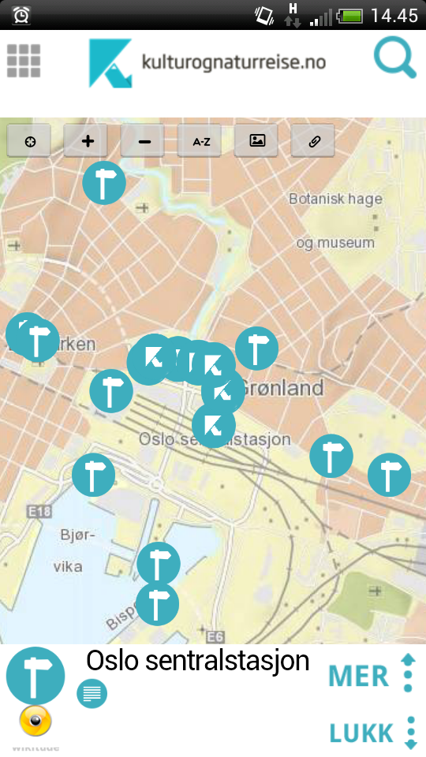
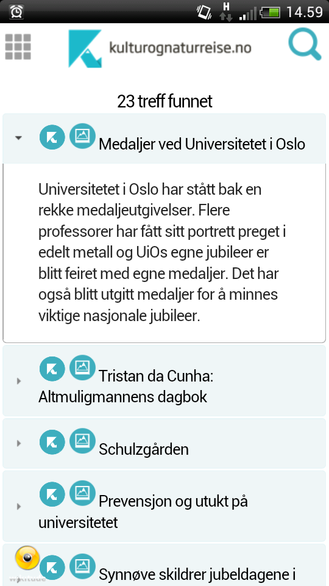
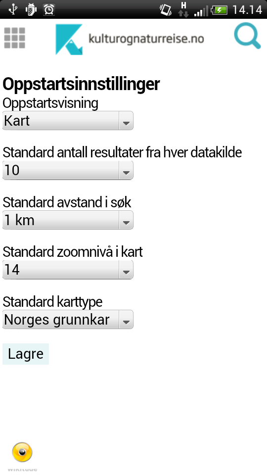
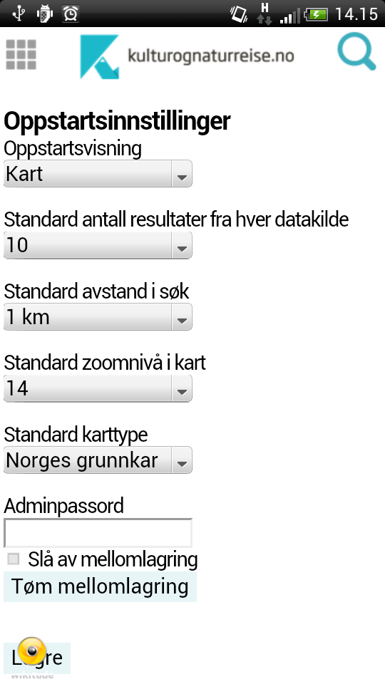

Brukerdokumentasjon for Kultur og-naturreise
Kart
Kartet er den standard oppstartsvisningen til appen.

Det foretas et søk med standardinnstillinger idet man starter appen, når søket er fullført blir alle visninger
fylt med resultatet av søket.
Knappene øverst på kartet har følgende funksjonalitet:
- Sentrer kartet rundt brukerens nåværende posisjon
- Zoom inn
- Zoom ut
- Søk etter steder
- Bytt karttype
- Lagre nåværende kartutsnitt lokalt
Meny

Ved å bruke menyen øverst i venstre hjørne kan man navigere til alle sider i appen.
Kameravisning
Kameravisning, også kjent som "Utvidet virkelighet" viser alle objektene fra resultatet som flytende
ikoner tegnet oppå kameravisningen til mobilen.
I denne visningen får man visualisert hvilke retninger
de forskjellige objektene er og hvor langt unna de er (basert på størrelse av ikonet).
Denne visningen benytter seg av mobilens kompass, og kan påvirkes av eksterne faktorer som forstyrrer dette.
Liste

Listevisningen viser alle resultater fra søket i en flat struktur. Her har man mulighet til å bla seg gjennom
resultatet dersom dette er stort.
Forhåndsvisning av PoI
Forhåndsvisningen av et objekt inneholder kategori, mediatype og tittel.


I kartvisning og kameravisning får man opp en forhåndsvisning av objektet man trykket på før man
kan velge å gå videre til den fullstendige detaljvisningen av objektet.
I listevisningen fungerer ekspandering av listelementene som forhåndsvisningen.
Detaljvisning
I detaljvisningen av et objekt får man opp all relevant informasjon om objektet.
Felt som vises:
- Tittel
- Kategori (ikon)
- Mediatype (ikon)
- Bilde, video, lyd (utifra mediatype)
- Ingress
- Beskrivelse
- Emneord (tags)
- Datering
- Kilde
- Institusjon (hvem "eier" dataen)
- Original versjon (opprinnelse av dataen)
- Opphavsperson
- Lisens
- Eksterne lenker (andre lenker til informasjon om dataen)
I denne visningen kan man legge objektet til i en eksisterende rute, eller opprette en ny som objektet da
blir lagt inn i. Rutene kan man senere se på rutevisningen.
Ruter
Rutevisningen inneholder alle ruter, delt opp i anbefalte ruter fra Kulturrådet samt egendefinerte
ruter som brukeren selv har laget.

Ved å velge å følge ruten vil søkeresultatet som tidligere vist i kart, kameravisning og liste, bli erstattet med
objektene fra den valgte ruten. Etter dette er funksjonaliteten i objektene lik som med et vanlig søkeresultat.
Innstillinger
Innstillingsskjermen inneholder flere valg man kan sette som vil påvirke oppstarten til appen, og alle
standardinnstilinger som brukes i appen.

- Oppstartsvisning - Når man starter appen vil den begynne i valgt oppstartsvisning
- Standard antall resultater fra hver datakilde
- Standard avstand i søk
- Standard zoomnivå i kart
- Standard karttype
